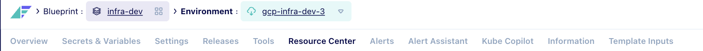
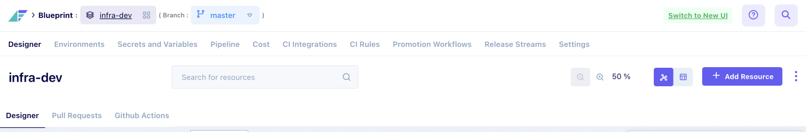
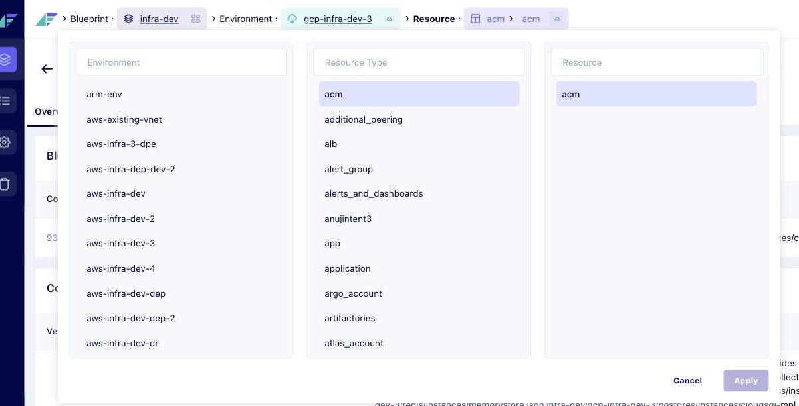
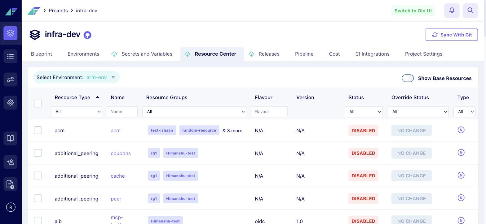
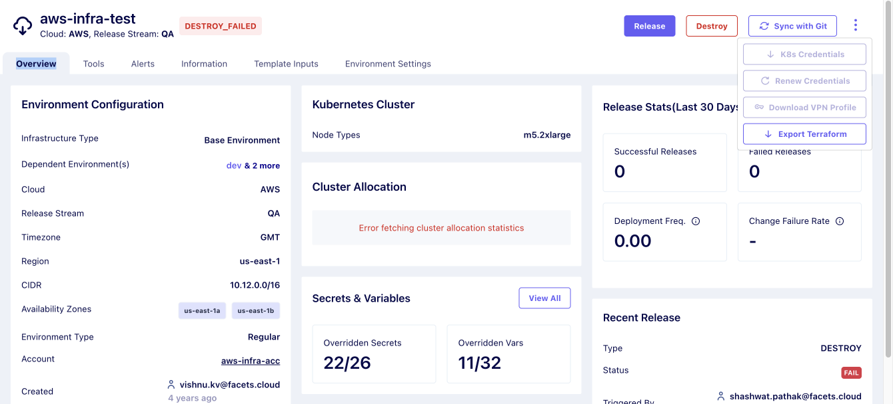
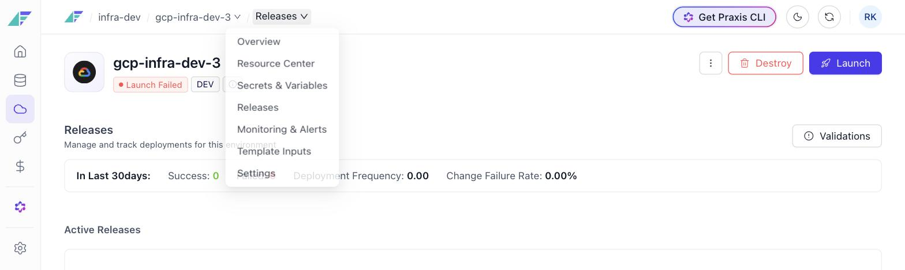

The navigation model
How you find your way around the Facets control plane. Rebuilt first, because every other screen sits on it.
Owned the research, the information architecture and every design decision. Worked in the codebase and shipped some screens.
Frame it as a chain, not a before and after "Two versions came before mine, and they had different navigation from each other. So this isn't one before and one after. It's what the first got wrong, what the second fixed and broke, and what I did with both in front of me."
Three live hand-offs are built into this deck After slide 3 → running v1. After slide 5 → running v2. After slide 9 → live product. Slide 7 → Figma.
What the product is made of
A project is the design. An environment is one running copy of that design. A resource is one thing running inside it.
database nobody cares about, one serving customers. Which environment you're in isn't a detail on the screen, it's what everything on the screen means.
Where the work happens — say this, don't put it on the slide Mixpanel, customer interviews and a task mapping all pointed the same way: the frequent work is inside an environment — changing configuration, debugging a release, running one.
Never attach a percentage Mixpanel was checked and customers were interviewed, but no cut produces a number. Say the three sources, not a figure. Org level gets set up once at project creation and barely touched.
Version one · the navigation


getSidebarConfig(currentURL) used the URL only to decide which icon lights up. So the rail was structurally incapable of saying where you were — and what it held was the material you configure once and never touch.
Then the indent is the argument Each row on the left sits one step deeper than the last. Four rows of navigation, stacked, and not one of them answers "where am I".
Be fair to version one — this is what makes the green line on the next slide land Point at the bottom strip: Releases, Resource Center and Secrets are all in it. Everything you needed to work in an environment was inside the environment. It just couldn't tell you that you were there.
Hand off "Let me show you that live rather than describe it." Switch to localhost:4300, click a project, then an environment, and let them watch the row swap.
Version one · switching

Changing one environment opened all three lists, so a one-level move became a three-level decision.
1Nothing said what happened to the lists you left alone, so you couldn't tell whether you'd changed one thing or three.
2The panel covered the page you were reading, so you lost sight of what you were deciding about.
Apply stayed greyed until a background check returned, so you could pick correctly and still be stuck.
The context switcher, opened from the chevron on the breadcrumb.
The scale is what makes it properly bad A customer runs about five environments. A form, with a commit step, to choose one of five. Never say fifty-one — those are demo-project dummies.
The observation that stays in your mouth The type labels took as much width as the names, so the thing you were trying to read got half the space. That's a designer's note, not a user's problem — say it only if someone asks what else was wrong.
Where the objection gets answered If anyone says "we already tried this", the green line on this slide is the answer. Version one's own switcher preserved your page. The idea was right; the cost of using it is what got rejected.
Version two


Releasing, resources and secrets were project tabs, so half an environment lived inside it and half outside.
1An environment opened as a panel over the project, so you stacked layers instead of arriving anywhere.
2Six tabs inside, and the work isn't among them, so you leave the environment to do the environment's work.
What it did to the environment Inside one: launch, scale, destroy, Kubernetes credentials, VPN profile. But releasing, resources and secrets became project tabs. Half in, half out, and no route between them.
Hand off "And this is the screen that made me sure." Switch to the running v2. Breadcrumb reads
Projects › infra-dev; the page is scoped to arm-env, which nobody picked.
Evidence
- Customers ran both old products at the same time, moving between them depending on which one made a given task easier.
- Nobody could say how to get back out to project settings once they were inside an environment.
- Nobody defended the three-list switcher. Version two deleted it rather than fix it.
- The frequent work is inside an environment — changing configuration, debugging a release, running one.
- Organisation settings are touched at onboarding and rarely after, yet they held the only permanent navigation.
Reading the code is the differentiator Say that you went and read it. One hardcoded list, the URL thrown away, identical in both generations. That's the root cause, and it's why the fix is one condition in one file rather than a restyle.
Never attach a percentage Mixpanel was checked and customers were interviewed, but no cut produces a number for where the work happens. Say the three sources, not a figure.
Goals
Three goals. Two for the people using it, one for the business.
Four navigations stacked, and none of them said which level you were on.
Routine tasks sat behind a level switch, a three-list panel and a commit step.
Two live products with different navigation, and customers split across both.
Hold version one's 5 back Only the 7 goes here. Version one's five is the twist on the impact slide — don't spend it twice.
The new model
You drill in. Each level owns its navigation, and the breadcrumb moves you both ways.
- Projects
- Audit Logs
- Project Type
- Module Registry
- Settings
- Overview
- Blueprint Resources
- Environments
- Secrets & Variables
- Cost · Settings
- Overview
- Resource Center
- Secrets & Variables
- Releases
- Monitoring · Settings
- Live
- Release History
- Overrides
- Actions · Compare
Where the root-cause fix lives
AppLayout.tsx reads the URL and renders a different sidebar component. One condition in one file.
Don't walk this slide. It exists so the next one is understood.
Solution
- One navigation per level — org, project and environment
- Releasing, resources and secrets moved back inside the environment
- A persistent environment header on every page inside it
- The environment overview shows health, not the configuration it was built with
- Every breadcrumb crumb is a link and a menu
- Switching environment keeps the page you're on
- Project Overview added for quick actions without drilling in
- Resource level unchanged, and a hierarchical URL at every level

Health, alerts, what's running, what needs attention.

Every crumb is a menu — environment, page, resource.
Answer the obvious objection before it's asked Project Overview sounds like what you criticised version two for. The difference is order. Version two had the shortcut and no home. Here the home came first.
Say what stayed at the project Comparing secrets across environments. You can't do it from inside one. Version two put that one in the right place and it stayed there.
The phasing is a senior signal "You don't swap the navigation of the most-used product in the company in one go."
Be ready for There is no environment rail — inside an environment the rail is still the project sidebar, so the way back never moves. Frequency argues for reachability, not occupancy.
Impact
Concede the soft ones first — it's what makes the hard ones stick "The click counts I counted and you can reproduce. The migration is a record. Satisfaction is my read of the same fourteen customers before and after, so I'd hold it as direction rather than precision."
Project Overview is the line to lead with It's a Mixpanel ranking, not a percentage, and it isn't cut by role. If pushed: "top page by visits; I haven't segmented it."
The twist, if you want it Version one took five clicks. The redesign built to fix version one had made that journey longer, not shorter. Say it only if there's room.
What went wrong, and still open We built the switcher as a menu, so cmd-click did nothing and people who compare two environments wanted two tabs. Added after launch. Settings still means three different things, and only the breadcrumb tells them apart. When you replace a navigation people have habits around, you check the habits, not just the tasks.